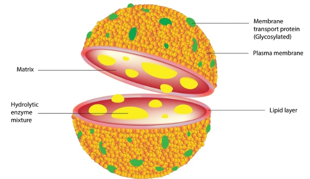

Learning objectives
1Identify the peroxisome in a cell
2Explain its main role: oxidation and detoxification
3Connect its structure with function
4Compare it with related structures
Visual learning

Peroxisome image from the original website asset library.
Where it is found
Eukaryotic cells. Abundance varies with cell type and activity.
Structure
Contains catalase and oxidative enzymes. Its organisation supports its specialised work.
Function
Main role: Oxidation and detoxification. It works as part of an integrated cell rather than acting alone.
Connections inside the cell
The peroxisome communicates or exchanges materials with membranes, enzymes, genetic information and the cytoskeleton according to its role. Cell function emerges from coordination among structures.
Key points to remember
✓Oxidises fatty acids and controls hydrogen peroxide.
✓Main role: Oxidation and detoxification.
✓Common location: Eukaryotic cells.
✓Structure supports function.
Active-recall flashcards
Answer first, then tap to flip.
Main function
Oxidation and detoxification
Tap to flipWhere found?
Eukaryotic cells
Tap to flipStructural clue
Contains catalase and oxidative enzymes.
Tap to flipQuick quiz
1. What is the main role of the Peroxisome?
The defining role is oxidation and detoxification.
My lesson notes
Notes are stored only in this browser.